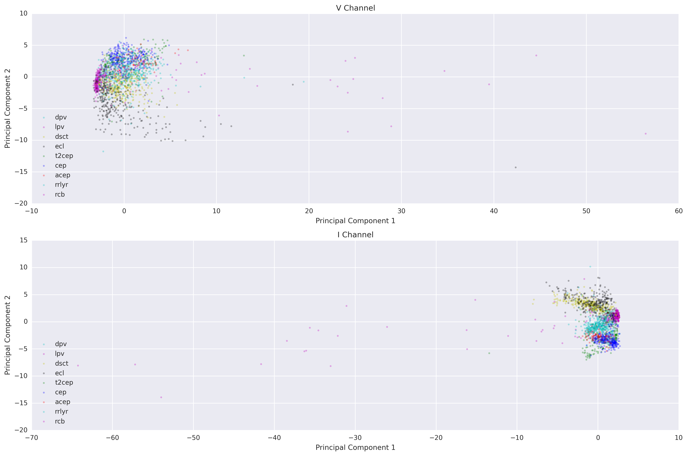

Data & Initial Exploration
Timeseries Data and Feature Extraction
Data used in the present study is a sample of the larger dataset used in Nun et al. 2014. Breifly, the astronomical time series are from the MACHO (Massive Compact Halo Object) catalog, a collection of star observations from July 1992 to 1999. Regions of the sky surveyed include the Large Magellanic Cloud (LMC), the Small Magellanic Cloud (SMC), and the Galactic bulge (Alcock et al. 1997). Data from the infrared (I) and visible (V) channels are used in this project.
57 Time series features were extracted using a library... Some of the features included... [Brandon]
1913 light curves were taken, ... in this class ... in this class .. in this class (less than what you had because I only used data points that had BOTH I and V channels) [Brandon]
Data Visualization
To visualize the 57-dimension data points more easily, principal component analysis (PCA) was done on the extracted time series features for each light curve. The first two principal components were used to make a 2D plot (Figure D1).
{kind=link}
Figure D1. PCA of light curves. Principal component analysis (PCA) was done on the extracted time series features for each light curve. Each dot represents a light curve. The color represents the known class label of the light cuvrve. Time series data from the visible (V) (top) and infrared (I) channels are shown.
As can be seen, the rcb class appears to be the most outlierly, with points spread out across the PCA plane, separate from the cluster of points in other classes. This was one reason we chose to use the rcb class to test our outlier detection methods.
Initial Exploration
brandon's manual exploration [Brandon]